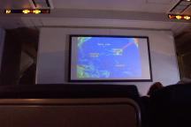
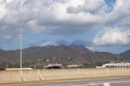
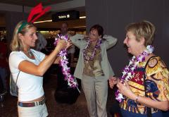
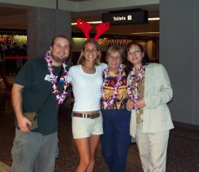
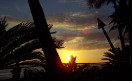

| Il
est présentement aux alentours de neuf heures du soir et je suis
brûlé. Cette nuit sera ma première vraie bonne nuit de
sommeil auquelle j'aurai droit. Nous sommes arrivés chez Marcelle
mercredi soir vers 18h00 pm. Elle nous avait préparé un excellent
souper constitué d'une entrée avec crème de fromage et
crevettes sur une poire et de la salade. Moi qui est difficile je me suis
dit un instant que ca commencait peut-être mal le voyage mais après
quelques minutes je me suis plutôt dit que je devrais essayer d'en
manger un peu. Ce que j'ai fait. Je n'ai pas tout mangé mais la suite
était composée d'un excellent potage et puis d'un ragout d'agneau.
C'était très bon. Le tout agrémenté d'une bouteille
de vin. Par la suite nous sommes allés nous étendre pour tenter
de dormir un peu avant d'entreprendre ce long voyage. J'ai réussi
à dormir un peu, mais dès que je me suis réveillé
je n'étais plus capable de me rendormir. Vers 2h45 du matin nous
quittions la maison de Marcelle pour nous rendre à l'aéroport.
Arrivés à l'aéroport vers les 3h15 am, rien ne semblait
encore ouvert. Pourtant le vol était à 5h50 et ils disent toujours
d'arriver 3 heures à l'avance. Enfin. Les péripéties étaient
juste sur le point de commencer...
Huguette avait amené un gros sac énorme comme bagage à
main dans l'avion, et elle s'est vite rendue compte que son sac était
trop gros pour entrer dans le compartiment de vérification de grosseur
de bagage à main. J'en étais nullement surpris. C'est à ce moment
qu'elle s'est mise à paniquer un peu et à être sur les
nerfs. Moi et Marcelle restions calmes mais Huguette était sur le
gros nerf. Elle a donc essayé de transvider des trucs dans nos sacs
pour alléger son bagage et de le serrer avec de la corde que Marcelle
a trouvé dans une machine distributrice de journeaux.. Nous avons
finalement réussis à insérer son sac dans le compartiment
de vérification, ce qui calma Huguette, mais pas pour longtemps!
Ensuite en donnant nos billets à l'agente, nous lui avons demandé
si elle pouvait nous placer dans la même rangée mais sa réponse
fut bête et négative. C'est alors qu'en faisant la file pour
entrer dans l'avion Huguette s'est à nouveau mise à rager et
à vouloir remédier à cette situation. heheheh. Cela m'importait
peu d'être dans la même rangée ou non, de toute facon je
voulais dormir et j'avais mon portable, walkman, bouquins, bref tout pour
me divertir. Mais comme tout bonne avocate, Huguette voulait absolument
remédier à cette situation et à la suite de quelques plaintes
elle réussi à faire changer nos billets Montréal-Détroit.
Mais on nous a dit qu'il était impossible de changer ceux du vol
Détroit-Honolulu, les places étant déjà pleines. Cela
ajouta au stress d'Huguette qui, comble de malheur, fut sélectionnée
pour se faire fouiller de fond en comble! Enfin, après plusieurs
longues minutes de fouillage dans son sac de bagage, on nous laissa partir,
mais il ne restait déjà plus que quelques minutes avant que
l'avion ne parte!
Il nous restait donc une dernière étape à franchir, celle
de la fouille des bagages à main. Où l'on check tout nos cossins
métaliques et électroniques. Je fut chanceux, on me laissa passer
sans poser des questions, aussi bizarre que cela puisse paraitre, comme
mon sac avait passé dans les rayons X et que je transportait mon
portable, ma caméra numérique, mon gameboy, etc. Mais rendu
à la porte de l'avion on annoncait qu'il manquait un de mes bagages
dans l'avion!! Je n'y comprenais rien, mais j'ai vite compris le bogue;
j'avais placé mes 2 sacs (pack-sac+sleeping) dans un gros sac de
plastique qu'on pouvait prendre à l'aéroport. Probablement que
le gars des bagages a juste scanné un de mes 2 sacs... Bon,
pour eux la situation semblait claire mais j'avais tout de même un
petit peur qu'il me manque de quoi rendu à Hawaii... J'étais
toujours calme et j'avais vraiment pas envie de me stresser avec ca, alors
je me suis simplement dit qu'au pire du pire je pouvais toujours m'acheter
du linge là-bas... Ensuite malgré le fait que j'étais dans
les derniers passagers manquants, le gardien se sécurité à
la porte de l'avion décida de me passer au détecteur de métal
et de vérifier mon sac. Mais brièvement. Il vu mon portable,
mes autres gadgets, mais sans plus. Il referma le tout et me laissa filer.
Un petit stress m'as envahit à ce moment comme tout le monde attendait
après moi dans l'avion mais ce fut vite passé. Rendu dans l'avion
j'étais soulagé mais j'avais vraiment hâte qu'on soit à Hawaii
car Huguette semblait encore stressée et sur le gros nerf pour l'histoire
des places dans l'avion. Après un rapide 2 heures de vol, rendu à
Détroit nous avions à nous déplacer dans une autre aile
de l'aéroport pour prendre l'avion vers Honolulu. Les indications
étaient claires... Porte A-28, et nous nous dirigions calmement vers
la section A. Mais Hugette était sur le gros nerf et voulait absolument
s'assurer qu'on s'en allait à la bonne place, même si on savait
très bien qu'on était à la bonne place... De plus elle
voulait que je demande encore une fois si nous pouvions rectifier nos
sièges dans l'avion afin d'être assis côte-à-côte,
ce que je fit mais je savais très bien qu'on me dirait non. Comme
de fait, nous ne pouvions pas. Huguette était en beau maudit... C'est
dommage parce que moi je suis de bonne humeur et il semble que rien ne
puisse me stresser... On est pas dans la même rangée... Rien
de dramatique... J'ai de plus en plus hâte qu'on arrive à destination,
espérant que le stress tombe. C'est pas de tout repos jusqu'à
date!!!
L'aéroport
de Detroit semble plutôt grand. Il y a d'immenses corridors qui semblent
sortir de l'intérieur d'un vaisseau spatial, lumineux et qui changent
de couleur. Il y a aussi un espèce de train futuriste qui permet
de relier une aile à l'autre. (photos) C'est très grand et futuriste.
Ca fait changement du petit aéroport de Québec mettons :)
Dans
l'avion Dorval-Honolulu, nous étions à bord d'un énorme
DC-10, et finalement les places qui nous avaient été assignés
étaient au beau milieu de l'avion, pas sur le bord de l'allée.
Rien pour contenter Huguette, même si elle était assise juste
derrière mon banc, et que nous avions l'écran géant en
pleine face (j'essaie de voir le coté positif des choses). Bon, malgré
tout son chialage, vous pouvez voir qu'elle sourit malgré tout et
je suis sûr qu'au fond, elle n'est pas si fâchée que ca.
Huguette est comme ca semble-t-il, quand ca fait pas son affaire il faut
juste qu'on le sache!!! Comme on voit sur l'autre photo, quand l'écran
ne diffusait pas de films ou d'émissions quelconque, nous pouvions
regarder des statistiques techniques sur le vol de l'avion en temps réel.
C'est la première fois que je voyait ca et j'ai trouvé ca très
intéressant. On voit sur la carte où l'avion est rendue exactement,
et son trajet effectué à date. Ca indique aussi la vitesse de
l'avion (environ 850 km/h) et le temps qu'il reste pour la destination,
la température de l'air à cette altitude (-40 degrees Celsius,
oui oui... je me demande comment on peut survivre en se cachant dans le
train d'atterissage, mais bon) et autres données techniques intéressantes.
Ca donne une bonne idée de ou l'on est rendu et du chemin qui reste à
faire.
Le voyage de neuf
heures se passa assez bien, y'a pratiquement pas eu de turbulences et
je pu réussir à dormir un peu. Cela fit beaucoup de bien. Le
reste du temps j'ai jasé un peu avec mes voisins qui étaient
des arméniens vivant à montréal. Ils étaient bien
sympas. La fille avait un ordi portable elle aussi mais c'était le Mac
G4 que je voulait m'acheter au début... Il est vraiment beau est
assez petit, plus compact que le mien... Mais malgré tout après
avoir constaté quelques bogues sur son ordi et avoir discuté
avec elle, je me suis rendu compte que je regrette pas du tout d'avoir
acheté un PC. Le mien est pas mal plus puissant et plante moins!!
J'ai écouté des bouts du film Tigre et Dragon, et aussi star
wars.. mais j'ai trouvé que la batterie de mon portable s'est vite
comsumée. D'autres gens avaient des portables et ils l'ont utilisés
plus longtemps que moi. Ce doit être les DVDs, ou bien mon logiciel
3D... Je sais pas. Enfin. Le reste du temps j'ai écouté de la
musique, et le chialage d'Huguette par rapport au service très moyen
de la compagnie aérienne en ce qui a trait à la bouffe et aux breuvages.
:) Finalement, après 9 heures de vol, enfin, nous voyons Honolulu
apparaitre dans les Hublots au loin!!!
J'ai
été surpris par la taille énorme de cette ville. Je croyais
Honolulu beaucoup plus petite que cela, mais c'est vraiment une grosse
ville, y'a beaucoup de gratte-ciels et c'est très étendu. Mais
le paysage est spectaculaire!!! En contraste avec la ville, la végétation
et les palmiers font ressortir la nature unique de cette ile isolée
au beau milieu de l'océan. Collé sur les gigantestes hotels,
se trouvent les superbes plages et collé derrière la ville,
les énormes montagues escarpés créés par les volcans.
Le contraste est vraiment impressionnant!! Suffit de marcher 5 minutes
et on se retrouve en dehors de la ville, au beau milieu d'une nature vierge,
volcanique lunaire. C'est vraiment spécial. Malheureusement je n'ai
pas vraiment de photos de la ville vue des airs, puisque je n'étais
pas près des hublots. mais on peut tout de meme voir sur la photo
les montagnes qui sont proches, pendant que nous sommes sur une énorme
autoroute très moderne et que de l'autre coté se trouve la ville.
Stéphanie
est venue nous accueillir à l'aéroport avec ses colliers de
fleurs, comme le veut la tradition ici !! En arrivant à l'aéroport,
la première chose qu'on sent c'est la chaleur!!! Il faisait chaud
quand on est arrivés, et c'était un peu humide, mais c'est une
belle chaleur. Le vent est frais et rafraichissant! Autre chose qu'on
remarque vite, c'est l'impressionnante quantité de japonaises ici!!!
C'est fou! :) Je vais vraiment pogner un torticoli ici à force
de me retourner de tous les cotés. Juste dans l'avion en s'en allant,
y'avait une petite hawaiienne-asiatique, probablement un mix des deux,
elle était vraiment jolie! Une vraie belle fille. J'étais pas
capable d'arreter de me retourner et de la regarder! Y'avait aussi plusieurs
japonaises dans l'avion. On est ensuite allés à l'appartement
de stéphanie, qui est un endroit très chouette je trouve! Ici
on est super bien, on a vraiment pas à se plaindre. Première
chose qu'on a fait après s'être un peu changé (pantalons
courts, sandales) on s'est rendus sur la plage de Waikiki et on a marché
pieds nus sur la plage jusqu'au bar de DUKE.. Duke étant le plus
grand surfeur du monde, ayant créé le sport et ayant battus
tous les records possibles. Il est mort aujourd'hui bien sûr et une
énorme statue de lui se trouve devant le bar, que j'aurais dû
prendre en photo, mais bon, je me reprendrai. En marchant j'ai failli
faire une crise cardiaque tellement j'ai vu des belles femmes. C'est vraiment
débile mental. On dirait vraiment que je suis atteri au paradis.
Il fait beau soleil, une belle chaleur, et y'a des japonaises partout,
partout, partout en bikini!!! Woah. Des petites, des grandes, des bronzées,
des moins bronzées, des plus ou moins jolies, des trop jolies, c'est
juste Fou, fou, fou. Je suis vraiment tombé à la bonne place!
:)
En
arrivant au bar de Duke on s'est installés dehors pour avoir une
belle vue du coucher de soleil, pendant qu'on a mangé un délicieux
repas agrémenté de quelques boissons, servis par une déesse
du nom de Vanessa que j'ai prise ici en photo. Quel beau sourire, n'est-ce
pas? J'ai mangé une pizza thailandaise avec du poulet dessus et 3
sortes de fromages. Le tout épicé d'une petite salsa piquante
et d'épices diverses. Un réel délice. J'ai aussi pris un
"Blue-Hawaii", un délicieux drink typique de la place.
Stéphanie et Marcelle avaient pris du Thon cru, seulement cuit un
peu pour que l'extérieur soit cuit et l'intérieur cru, tout
rouge comme un steak très saignant. En regardant l'assiette à
stéphanie j'avais vraiment l'impression de regarder un steak très
saignant, mais c'était en fait du Thon! J'ai goûté, et
Huguette aussi... et WOW! Quel délice. C'est tendre tendre tendre
et ca goute pas trop, c'est juste parfait, ca goute juste le bon poisson
vraiment frais. C'est délicieux!!! Rodrigue, il faut que tu essayes
ca, tu vas adorer, c'est garanti. Même Huguette qui pensait pas aimer
a beaucoup apprécié!
Nous sommes ensuite allés faire le tour des kiosques où ils
vendent des souvenirs divers, et nous nous sommes promenés sur la
rue principale de Waikiki. Encore une fois, j'ai vu à peu près
100 femmes que je suis prêt à marier demain matin!!! heheh.
Ce qu'elles sont belles, ces japonaises! On a plus l'impression ici d'être
au Japon que d'être aux États-Unis. Demain nous irons à une plage
où l'eau n'est vraiment pas creuse, et on peut y observer toutes
sortes de poissons. Ca devrait être génial. Maintenant cette
journée est finie et je suis en train de terminer cette page sur
laquelle je tape depuis déjà une heure ou deux. Le temps passe
vite quand on tapes ce qu'on vit!! L'avion vous semblera peut-être avoir
été quelque peu pénible, mais ce n'était vraiment pas si pire que ca,
et tout ca est très vite oublié une fois qu'on est ici. Tout est tellement
beau... Y'a pas juste les femmes... La nature est indescriptible. Y'a
des fleurs partout, des arbres incroyables, comme les Manguiers et une
sorte de Bonzai géants. Partout ou il y a un jardin c'est comme si on
étais au jardin botanique. C'est vraiment beau ici. Je crois bien que
je serait capable d'habiter un endroit comme ici! :) Je devrais maintenant
aller me coucher car il se fait tard et je dois être en forme demain.
J'ai une chambre juste pour moi ici, au sous-sol, c'est chouette. Il y
quelques coquerelles qui rôdent parfois mais elles sont bien gentilles
et beaucoup moins grosses que celles du mexique :) Je regrette nullement
d'avoir apporté mon ordi portable. Ce fut très pratique dans
l'avion et regardez maintenant l'usage que j'en fait. C'est vous qui en
profitez! Vous avez même des photos. On peut pas dire que c'est pas
LIVE ca non?? J'ai pas de connection internet ici présentement mais
je vous ferai parvenir ce message dès que j'ai acces à internet
quelque part! Maintenant je vais dormir. Je pense à vous! Je
vous embrasse,
David xxx
Partie
2 --> |